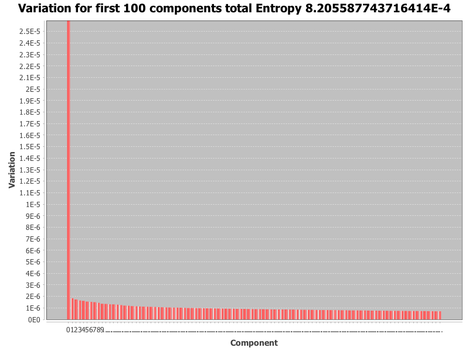
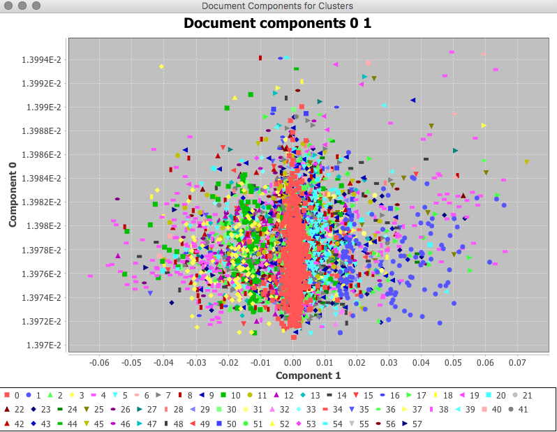
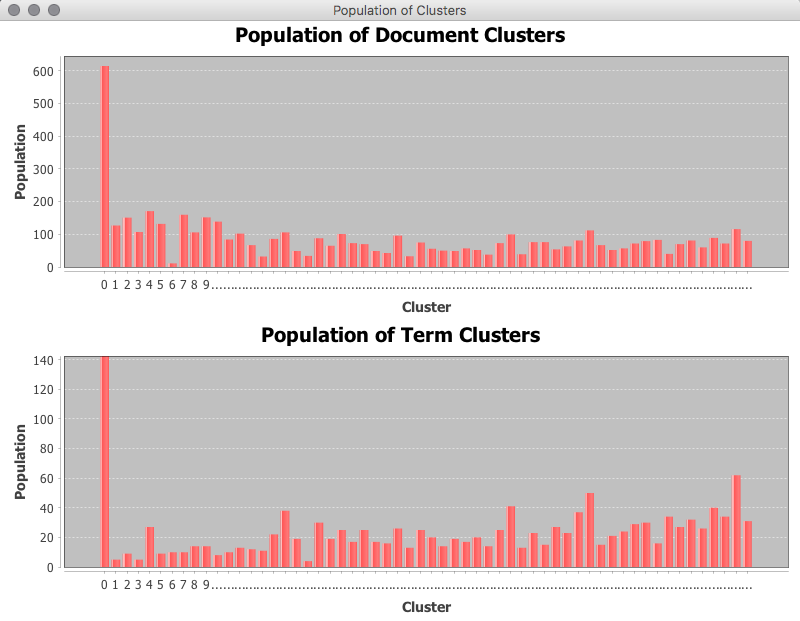
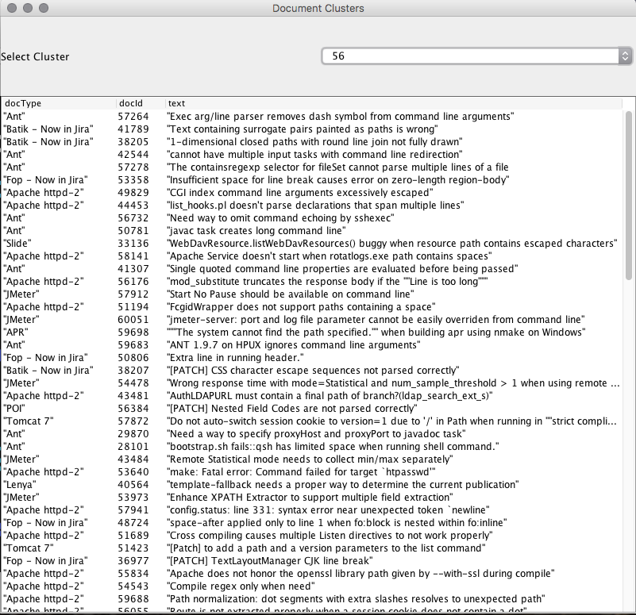
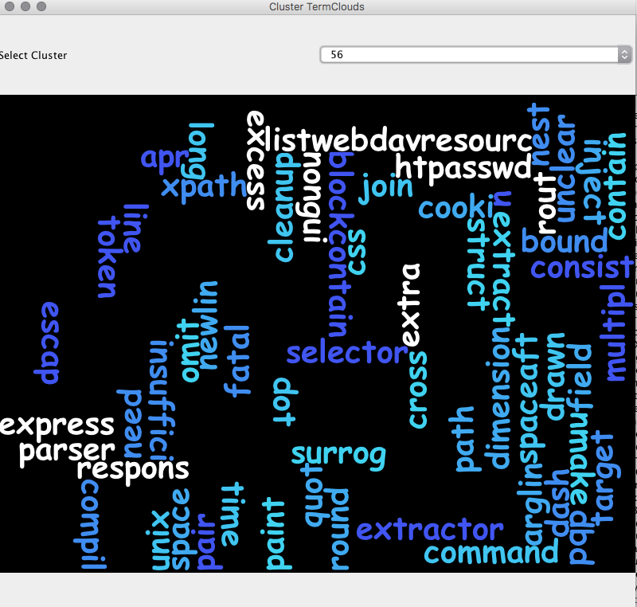

The implementation of Latent Semantic Indexing in this package is motivated primarily as an application of singular value decomposition to term document vectors built out each entry in a corpus of short documents. The resulting vectors form the row of a term weight matrix where the rows represent a document and the columns represent the terms extracted from the entire corpus. Once the matrix is formed the singular value decomposition is applied to obtain the left hand eigenvectors the singular values and the right hand eigenvectors.
It is intended as an exploration of the application of the SVD to
Note that the technique of matrix decomposition is useful not only as a preprocessing step, the ability to project the original feature vectors of the data set into the principle components (as derived from either the left or right hand components) as a geometric space permits a convenient method of searching which may rely on distance measures between two vectors, the query vector, and each vector in the resulting search space. Similar techniques have been used in both early methods of search within signal processing such as for versions of facial recognition (as in eigenfaces) and also as the search step in voice biometrics, and the geometric projection remains in use during the search stage of current algorithms.
The application to Latent Semantic Indexing gives an example of how the decomposition can be applied for such search methods, however when applied to different domains the initial treatment of the data will differ. For example, in the case of text processing, feature vectors may be constructed out of different techniques for mapping documents into weighted term vectors. Whereas for applications in voice biometrics for example, the feature space will be derived from the key features identified in processing the voice signal, which is necessarily a frequency based domain. For the early examples of facial biometrics, such as eigenfaces, the features are derived from a normalised collection of face images. Once the model is constructed it may be referred to as a background model for example, new records may be added by projecting the feature vector into the reduced component space, and the resulting record may be added as a row in the U matrix. Note however the number of components in the reduced space does not change, only the number of objects is increased.
In the case of latent semantic indexing there is a limitation where the model is limited by the vocabularly that is learnt from the original training set. Adding new documents can be achieved by encoding the document into the term document vector that contains the same number of terms as the original corpus. The resulting vector can then be projected into the search space and added as an object to the U matrix. However, if new terms are desired, then it would in general be necessary to recompute the entire term document matrix, and in turn recompute the SVD and reduce the dimensions of the SVD accordingly.
The implementation provides a starting point for exploring those areas listed, and further experimentation.
The singular value decomposition provides a decomposition of a matrix such that
$$ A = USV' $$The decomposition is described in Skillicorn 2007, as one which indicates the amount of variation in the latent features of the data set. If $A$ is a $m \times n$ matrix, the number of components $k \leq n$ and where practical $k \leq m$.
The rows of $V'$ are interpreted as underlying factors. The transformed basis provides a set of new factors a correlation between the original attributes of A and the rows of V can be constructed in order to determine the relationship between the original attributes and the factors in V. This relationship may include positive and negative relationships for multiple attributes with a single factor in $V'$.
The interpretation of the components is similar to the interpretation of PCA in this approach. When reviewing the relationship of of objects to attributes the $V'$ matrix can be seen as an orthonormal basis for the matrix $U$ Alternately, $U$ also represents an orthonormal basis for the matrix $V'$.
This is especially useful for visualisation. For example, coordinates from $U$ can be plotted, these are separated by the directions of the corresponding components in $V'$.
The resulting matrices describe the following The matrix $U$ describes the relationship between objects or rows of A, the transpose matrix $V'$ describes the relationship between attributes or columns in $A$ with the rows of $V'$ or columns of $V$ its transpose. The diagonal (or vector) $S$ describes the amount of variation in the respective components which are the columns of $U$ and the columns of $V'$.
A useful difference between PCA and SVD is that whilst PCA is capable of measuring either the relationship between objects $(A'A)$ or the relationship between attributes $AA'$ it can only do so distinctly, and not both at the same time in the single operation. Whilst the SVD can provide the measurements of components for objects and attributes in one operation.
Data is considered to be standardised and spherically distributed prior to executing the procedure, due to this an appropriate method of normalisation or standardisation should be performed on the input data set prior to performing the procedure.
There are some exceptions to this rule as in the case of matrices of dummy variables for example. The $S$ matrix in the components interpretation provides a measure of the amount of variation in each component. Note that in the Breeze implementation if the
P.cols > P.rowsthe SVD will calculate the number of components equal to the
min(P.rows, P.cols)
Latent Semantic Indexing is an example of the application of the SVD to a corpus of natural language documents where the components collapse the similar term features from the document corpus into a single component [2]. The technique starts by first encoding each document as a feature vector, which results first from tokenising, preprocessing and finally weighting terms.
There are a number of issues to consider in preprocessing natural text. This implementation applies a simplistic approach where each document is tokenised using spaces or punctuation marks via a regular expression, and the resulting tokens are passed through a porter stemmer (https://en.wikipedia.org/wiki/Stemming). Different term weighting schemes available, however the approach to term weighting in the implementation uses the TFIDF term weighting scheme ( https://en.wikipedia.org/wiki/Tf–idf).
The TFIDF weighting is applied once all documents have been tokenised and stemmed and the entire vocabulary
of terms has been identified. The terms
are then hashed using the built-in hashcode of java, and ordered based on the hashcode. This then defines
the order of the columns for the feature vectors
of each document. Once this order is determined, the TF-IDF is then computed for each document as follows.
For each term, the term frequency for a given document is calculated using the augmented frequency to
prevent bias towards longer documents
$$
tf(t, d) = 0.5 + 0.5 \times \frac{f_{t,d}}{max\left(f_{t',d} : t' \in d\right)}
$$
where $f_{t,d}$ is the frequency of the term for the given document $d$.
The inversse document frequency it is calculated by retaining of total count of documents that contain each
term, and uses the logarithm of
$$
idf(t, D) = \log{\left[ \frac{N}{\left| d \in D : t \in d \right|} \right]}
$$
Once the $idf$ is calculated then the final weight is defined as:
$$
tf-idf(t,d) = tf(t,d) \times idf(t,D)
$$
Once the TF-IDF matrix $A$ is computed the SVD is then calculated $$ \hat{A} = U S V' $$ and can be used for both exploration of the corpus and analysis of the components. In the example implementation the text corpus is taken from the Apache projects bug database, where the documents correspond to the titles of the bugs, the corpus has over 5000 examples of issues raised.
Initially after performing the SVD, it is possible to calculate the entropy of the data set which indicates
how much noise exists in the data
and provides a heuristic measure that can be used to determine how the components explain the amount of
variation.
In order to calculate the entropy, the percent of the contribution $f_k$ of each singular value in $S$ is
calculated
$$
f_k = \frac{s_k^2}{\sum_{i=1}^r s_i^2}
$$
These values can be plotted as a scree plot, which provides an indication as to the importance of each
component.

The above image is an example of such a scree plot, note however the first component from the svd derived
form this
example contributes close to 99% of the variation, whereas the other components contribut much less to the
variation.
Note that the original
set of singular values $S$ are listed in descending order, so too the percentage of variation explained.
The total entropy for $r$ components is then calculated
$$
entropy = \frac{\sum_{k=1}^r f_k \log{f_k}}{\log{r}}
$$
The resulting value for entropy is a value such that $0 \leq entropy \leq 1$.
The following heuristics can be applied [1]
Skillicorn provides details on methods of selection for the number of components [1], often the process is heuristic, however the amount of variation explained by each component may be used to select the number of components required for a given threshold. The implementation provides the option to choose the number of components through providing a threshold for the total contribution and a desired minimum number of components. Once the desired number of components $k < r$ are determined, it is possible to use the subset of the decomposition to form the reduced SVD. In the implementation the subset is sliced for example
val rU = U(::, 0 until k).toDenseMatrix
val rS = S(0 until k).toDenseVector
val rVt = Vt(0 until k, ::).toDenseMatrix
Once the reduced space has been determined, the search space can be computed for new incoming queries. The query must be preprocessed in the same manner as the document corpus is preprocessed, hence tokenisation and stemming are applied to the incoming query. Any terms in the query that are not in the vocabulary of the model will be excluded, however in a production application it would be useful to store any out of vocabulary terms that can then be later inspected. The query terms must also be ordered in the same position as the document terms when forming the query vector, if the $idf$ from the original model is known it is possible to multiply the local term freqency $tf$ for the query to create the $tf-idf$ of the query in defining the query vector. The resulting query vector will be a sparse vector, with only those terms appearing in the query having a non-zero value. If the document term matrix has $n$ term columns the resulting query vector will also have $n$ columns.
In order to convert into the search space, the query vector $q$ is projected against the term components for $V'$ resulting in the projection $$ q_p = q \cdot V $$ However prior to performing the projection the search term component matrix is created by multiplying the term components by the square root of the singular vectors $$ sS = I S^{\frac{1}{2}} $$ where $I$ is the $k \times k$ identity matrix, hence $sS$ is the diagonal matrix where the diagonal is the square root of each singular value in $S$. $$ sV = V sS $$ The query projection is then calculated as $$ q_p = q \cdot sV $$ Note also the search space for the $U$ matrix $sU$ is also formed as $$ sU = U sS $$
Once the query has been projected into the reduced search space, a distance metric can be used to match
against the corpus in $sU$.
Hence the search becomes a matter of mapping from the rows of $sU$ with the smallest distance to $q_p$.
$$
search(q_p, sU) = ordering\ \left[ dist (q_p, sU) \right]
$$
the implementation makes use of the distance metric defined by the cosine distance between vectors $X$ and $Y$
$$
cosdist(X,Y) = \frac{X'Y}{\sqrt{X'X} \sqrt{Y'Y}}
$$
Hence the cosine distance values close to $1$ are closely aligned, those values close to $0$ are
perpendicular and those values close to
$-1$ are diametrically opposed. Hence documents most closely aligned are those whose cosine distances are
close to $1$ and greater than $0$
Documents are ranked in descending order in the range of distances $[1,0]$.
When searching in the implementation the index of each row in $sU$ is paired with the cosine distance, and
the same index is used to map to
the original document identifier from the data set, and in turn mapped back to the excerpt of the original
text.
In this way there is a mapping from the geometric space of the SVD back into the original text data that can
be used to present results.
The test case example uses the query "http redirect error" and retrieves the results containing the document
id and text title of the original document.
val query = Array("http", "redirect", "error")
// debug the search process and the search projection
val searchResults = LatentSemanticIndex.performSearch((ssU, ssS, ssVt), TfIdfCount(), query, stopwords, lsi)
The value search results that is output in the test example is:
List(
(59749,"apache http 2.2.29: Segmentation fault"),
(50011,"error running apache),
(53233,"Internal error: proxy: error reading status line from remote server"),
(29755,"mod_usertrack should use err_headers_out"),
(41114,"ACL HTTP method is rejected by mod_proxy_ajp"),
(59090,"Issue with WebDav - org.apache.http.NoHttpResponseException"),
(52510,"Segmentation Fault 11"),
(48440,"Segmentation Fault"),
(56918,"error: 'ap_copy_scoreboard_worker' undeclared here"),
(58044,"Error sintax 'lua_dump'"))
The SVD can also be used to approximate the correlation between objects and the correlation between attributes. This can be useful when applying other algorithms that can take advantage of the correlation. It can also be used for purposes of visualisation.
The correlation between objects is approximated as the following $$ AA' \sim U\Sigma^2U' $$ Where $\Sigma$ is the diagonal matrix $I S$ and $I$ the $k \times k$ identity matrix.
The correlation between attributes (in the case of LSI, terms) is approximated as $$ A'A \sim V\Sigma^2V' $$
There are a number of methods to perform clustering on the reduced SVD, these can include applying a heuristic choice of $k$ clusters based on the number of significant components and applying k-means clustering to the document matrix $U$ and labelling each mapped document for the row in $U$ with the corresponding cluster.
The implementation provides an alternate method derived from Skillikorn's treatment of non-negative matrix factorisation [1]. $U$ can be converted to a non-negative matrix by subtracting the minimum value. $$ U_{pos} = U - min U $$ The term matrix can also be processed in a similar manner. While not true non-negative matrix normalisation, Skillikorn does suggest that processing the resulting SVD in this way does give some similarity between NNMF and SVD and indicates that both have similar structure, however the difference is that the SVD factors are global descriptions whereas the factors of the NNMF are local.
The clustering technique then scans each row in the $U$ matrix and labels the corresponding document index with the component $k$ that has the maximum column value.
The term matrix $Vt$ can also be treated in a similar manner, in this case the columns of $V'$ are scanned and the index of the maximum value of each row is then used to assign a cluster label to the corresponding term index.
The following diagram illustrates the results of document clustering from the example program "LsiModelClusterExample", note that the number of clusters are also determined in an exploratory manner, by comparing the contributions of components to the total entropy.
The technique serves as a suitable approach for exploration of the corpus, and may be used in visualising the document corpus in
the dimensions provided by the components. The image below provides an example of such a visualisation, the axis is defined by
the first two components of the $U$ matrix, and demonstrates some visual patterning where there are some vertical bands of colouration visible
in the scatter plot where points are coloured based on their cluster label.

The technique is noted to perform well where the document clusters have relatively uniform populations and suffers where there are strongly uneven populations [1].
The following image illustrates the the first cluster is favoured over the other clusters, however the remaining clusters have a similar scale of population.

Reviewing the contents of the first cluster the commonality between documents is less obvious, whereas inspecting the contents of smaller clusters such
as in the example below for cluster 56 allows by inspection some intuition as to the commonality between documents.

Where the common keywords such as "line", "newline", "path", "escape", "sequence", "parser" appear in the text as repeated features.
The plotting of the terms selected for the corresponding cluster also gives further intuition to the correspondence.

Hence the method of clustering can serve as a means of exploring the content of a larger document corpus where reviewing large volumes of material
may be inconvenient in the short term, such a technique can serve as a method of reviewing content and direct further exploration of such content.
Additionally clustering leads into the domain of automated topic extraction and automatic document classification, which is partially automated by this method.
However a separate process would be required to assign sensible meaning to the extracted key terms for each cluster, as such a manual labelling
process could be applied.
Once suitable labels are applied, one potential implementation of the classification solution would be to treat new examples as a query and to then
retrieve the closest matching documents for that query, and apply a k-nearest neighbour selection approach in assigning the label, this is very similar
to the use cases in the biometrics domain where new samples are preprocessed and mapped into the SVD space and the search query is essentially used
to determine if the identity being asserted resides closely enough within the search space using a distance metric. The simplicity of the
geometric mapping that results from the SVD is an appealing quality of the technique and provides a great deal of flexibility.
This discussion has not really discussed the concept of noise, and denoising, and neither has it delved into the application of the SVD to correlation
analysis, however these areas are also suitable for the application of the SVD, and further investigation is also warranted.